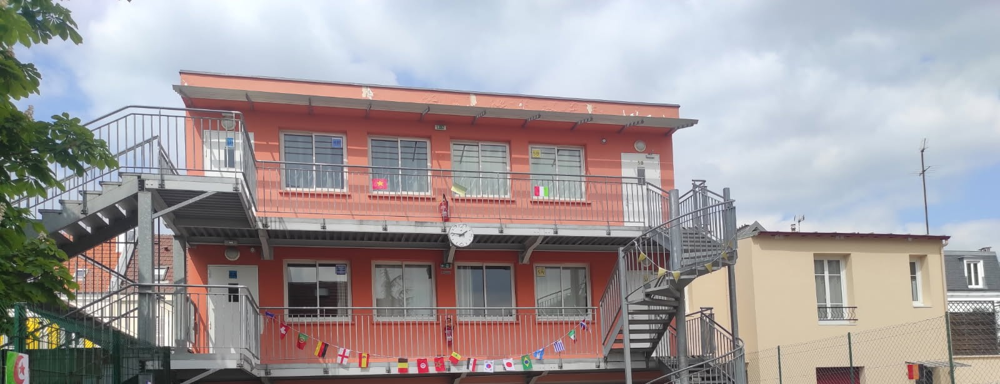

Les langues pour élargir le monde
Apprendre une langue ne consiste pas seulement à mémoriser des mots. C’est découvrir d’autres manières de nommer, de penser, de raconter et de comprendre.
Dès l’origine, le Cours Chambertin considère que l’ouverture au monde passe par les langues et les cultures. L’introduction précoce du chinois n’a jamais relevé d’un effet de mode. Elle exprime une conviction profonde : préparer les élèves à comprendre un monde plus vaste que leur environnement immédiat.

À l’École
Les langues et les cultures prendront place dans une progression adaptée à l’âge des élèves et aux objectifs de chaque niveau.
Aucun volume horaire n’est figé avant la constitution définitive de l’équipe. Les modalités prévues sont présentées lors des rendez-vous individuels et seront publiées une fois arrêtées.
Au Collège
Dès la sixième, tous les élèves suivent l’anglais et découvrent le chinois et sa culture. En cinquième s’ajoute une deuxième langue vivante, l’allemand ou l’espagnol : c’est aussi l’année où chacun choisit sa troisième langue (LV3) jusqu’en troisième, entre la poursuite du chinois et le latin. Cette diversité contribue à l’ambition scolaire et à l’ouverture culturelle.
Le chinois occupe une place singulière dans l’histoire de l’établissement. Les langues sont prolongées par des projets, des ateliers, des sorties et des rencontres lorsque le calendrier le permet.
L’ouverture au monde ne se résume pas à l’apprentissage linguistique. Littérature, histoire, géographie, sciences, arts, sorties et voyages mettent les connaissances en relation et permettent aux élèves de confronter leurs représentations à des réalités plus vastes.